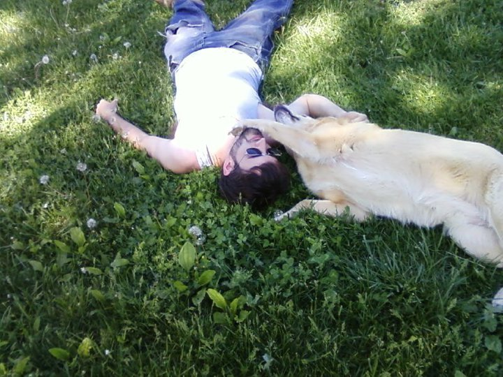

Andrew Baker's Bio
A Michigan native, Andrew Baker now makes his home in Kentucky. He received a BA in Studio Art from Asbury University in 2011, where his thesis exhibit received departmental awards for excellence. Andrew’s studio is located in Nicholasville, KY, where he lives with his wife, Caitlin, and his two sons Fritz and Finnian. His future plans include pursuing an MFA in Stained Glass, and spending time with his growing family.